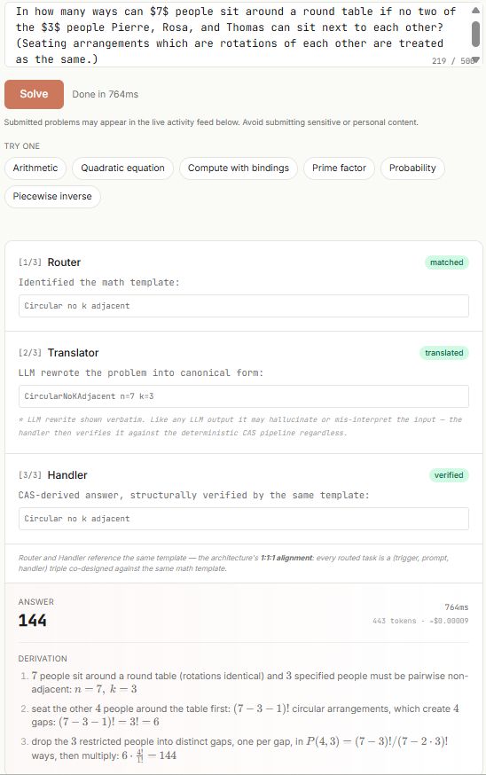
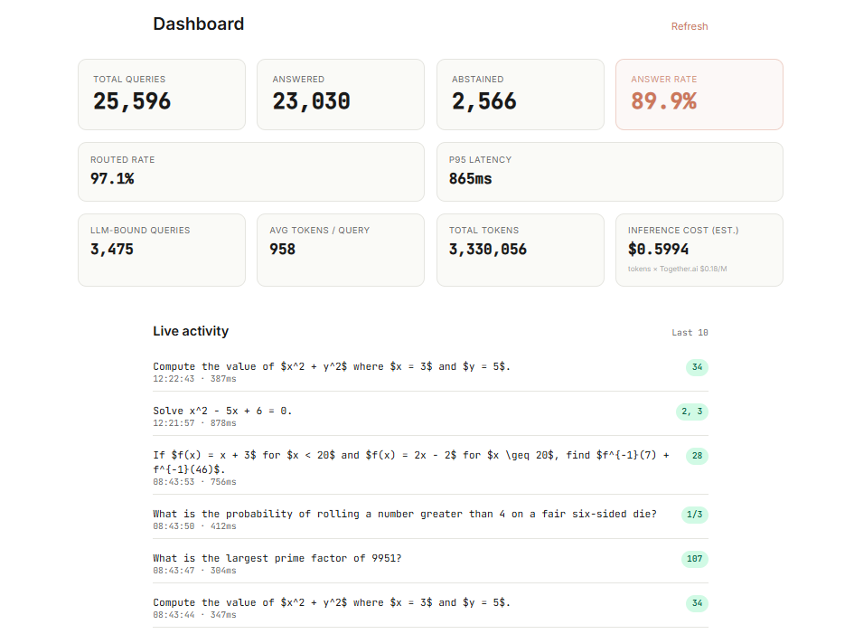

Per-task exporters emit Lean 4 theorems that encode each problem and the CAS-derived answer, and these are checked by the Lean kernel with Mathlib.
Abstract
We present Moxia, a trust-first neuro-symbolic architecture for self-explaining mathematical reasoning over natural-language input. Its language model is strictly a canonicalizer: it rewrites informal problem text into a narrow schema consumed by a deterministic Computer-Algebra-System (CAS) pipeline, which derives the answer or abstains as a first-class output. Routing follows a 1:1:1 alignment of problem-shape regex, schema-specific prompt, and closed-form handler: 5,741 routes, 75.9% of which answer without invoking the model, with zero LOST_CORRECT regressions as a standing release gate. Because the answer is derived, so is its explanation, rendered from the steps the handler took; where the derivation fits a fragment of Lean 4 with Mathlib, the same declared data become a theorem the kernel checks. On the full 5,000-record MATH test split, designed against, Moxia answers 95.6% (4,780/5,000) with zero confident-wrong answers and abstains, saying where, on the other 220; its MATH-500 subset reads 95.2% (476/500), also with zero wrong. Earlier versions called MATH-500 held out; it is a subset of the test split, and this version says so. We release the run record by record: the problem, the expected answer, the model's transcription, the answer or abstention, the explanation, and the Lean theorem marked as compiled. 3,142 of the 4,780 correct answers carry a theorem, and all 3,142 compile; building the theorems actually served, not only a fixture corpus, found seven that did not, two of them false statements beside correct answers, all repaired before release. What we emphasize is not an accuracy figure but the forward dynamic: every logged abstain is a candidate correct after one ship cycle, since new tasks compose without regressing the registry.
Problem
LLM answers to math problems offer no way to verify them, so a confident wrong answer looks the same as a correct one. Lean-based provers do verify, but they need the problem already formalized, which is hard for natural-language queries.
Approach
A regex router selects one task per problem. An LLM (Qwen 2.5 7B) acts only as a canonicalizer, rewriting the text into that task's narrow schema. A deterministic SymPy handler then derives the answer or abstains with a structured fail-reason, and explanations are rendered from the handler's own steps. Where a derivation fits a fragment of Lean 4 with Mathlib, a per-task exporter turns the same declared data into a theorem for the Lean kernel to check.

Figure 1: Single-query trace from the production demo on a circular seating problem: in how many ways can 7 people sit around a round table if no two of Pierre, Rosa and Thomas are adjacent? The three numbered pipeline stages (Router, Translator, Handler), followed by the answer and its derivation, materialize the 1{:}1{:}1 alignment of Section 2.1 : Router and Handler name the same Circular no k
Results
On the 5,000-problem MATH test split, which the system was designed against, Moxia answers 95.6% correctly with zero confident-wrong answers and abstains on the rest. On the MATH-500 subset it reaches 95.2%. Of the 4,780 correct answers, 3,142 carry a Lean theorem, and all of them compile; seven theorems that initially failed were repaired before release.

Figure 2: Cumulative dashboard from the production deployment. Top row: hero counters (Total queries, Answered, Abstained, Answer rate). Middle row: structural correctness signals (Routed rate \sim 97\% ; p95 latency \sim 865\, ms dominated by LLM -bound traffic). Bottom row: efficiency aggregates confirming the per-query footprint of Section 3.7 (LLM-bound queries, average tokens / query, total t
Domain
Qwen CoT Acc
Qwen Wrong
Moxia Acc
Moxia Wrong
Algebra
86.6%
159
90.82%
0
Number Theory
73.3%
144
91.85%
0
Counting & Prob.
66.7%
158
90.30%
0
Precalculus
49.5%
276
90.29%
0
Qwen 7B chain-of-thought vs Moxia on selected MATH domains